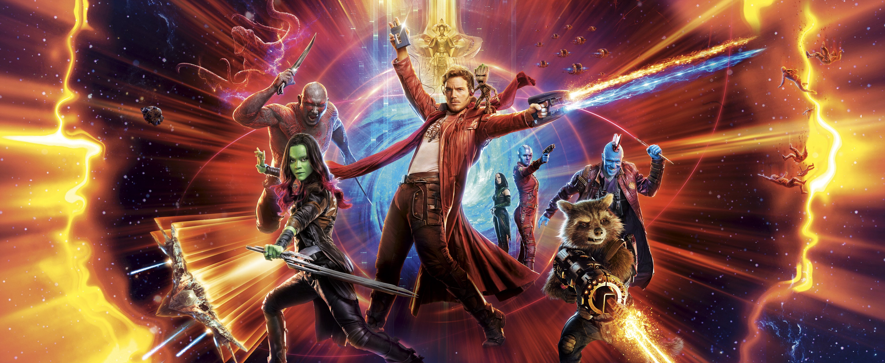

About Groot
Groot is a extraterrestrial tree-like creature who is a founding member of Star-Lord's Guardians of the Galaxy.
Groot and the Guardians of the Galaxy
Groot's Characteristics
- Ability to create multiple miniature copies of himself known as cuttings which retain all his memories
- Can speak through trees of all forms
- Has super strength
- Genius-level intellect
Groot's Friends
Groot has some awesome friends who team up to save the Galaxy and it's inhabitants. His best friend is Rocket. Click on the links below to read more about them: